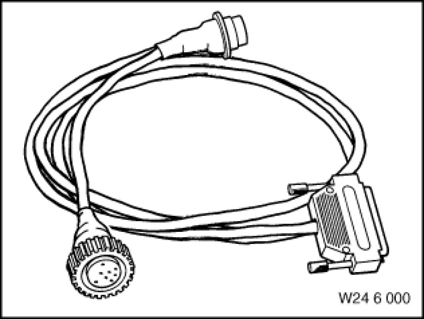
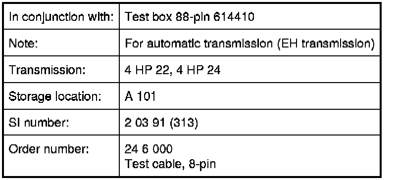

Operation CHARM
: Car repair manuals for everyone.
Home
>>
BMW
>>
2007
>>
X3 3.0si (E83) L6-3.0L (N52K)
>>
Repair and Diagnosis
>>
Transmission and Drivetrain
>>
Automatic Transmission/Transaxle
>>
Tools and Equipment
>>
24 6 000 Test Cable, 8-Pin
24 6 000 Test Cable, 8-Pin
24 6 000 Test cable, 8-pin

